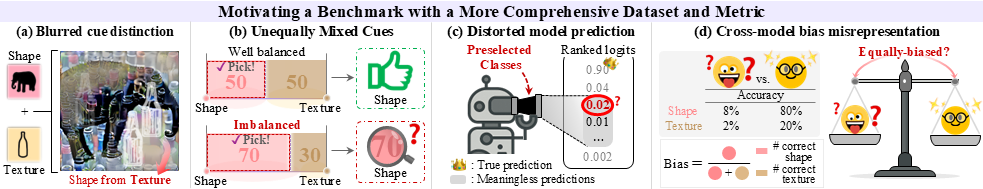

Abstract
Understanding how neural networks utilize visual cues provides a human-interpretable perspective on their internal decision processes. Building on this motivation, the cue-conflict benchmark has initiated important progress in bridging human and model perception.
However, despite its value, it falls short of meeting the necessary conditions for a precise bias analysis: (1) it relies on stylized images that blend shape and texture cues, blurring their distinction and offering no control over the relative contribution of each cue; (2) limiting evaluation to preselected classes distorts model predictions based on cues; and (3) the cue-conflict metric fails to distinguish models that genuinely utilize the cues. Collectively, these limitations hinder an accurate interpretation of model bias.
To address this, we introduce a REliable Framework for INtegrated Evaluation and Disentangled Benchmark of Interpretable Alignment of Shape/texture in neural networks (REFINED-BIAS). REFINED-BIAS generates artifact-free samples while preserving human defined shape and texture as faithfully as possible, and quantifies cue sensitivity across the full label space using Mean Reciprocal Rank, enabling a fairer cross-model comparisons. Extensive evaluations across diverse training regimes and architectures demonstrate that REFINED-BIAS not only provides a more accurate assessment of shape and texture biases than prior benchmark, but also reveals new insights into how models utilize cues, clarifying previously inconsistent findings.
What Problem Do We Address?
Does the cue-conflict benchmark truly reflect the precise biases we aim to measure? While cue-conflict offers a principled way to disentangle visual features, we argue that its current instantiation introduces artifacts and ambiguities that hinder meaningful interpretation:
- (a) Blurred Cue Distinction: the cues generated by stylization are inherently ambiguous, which makes them unclear not only to humans but also to models.
- (b) Unequally Mixed Cues: stylization cannot control the ratio between shape and texture cue information to balance then in an equal ratio (50:50), which is crucial for accurately reflecting true cue preference.
- (c) Distorted Model Prediction: restricting the evaluation of model bias to preselected classes hinders the benchmark from capturing true cue utilization.
- (d) Cross-model Bias Misrepresentation: the cue-conflict's bias metric fails to distinguish models that genuinely utilize each cue, treating a model correctly predicting 8% shape and 2% texture equal to one matching 80% and 20%, respectively.
REFINED-BIAS Benchmark
To address the Blurred Cue Distinction and Unequally Mixed Cues, we define shape and texture based on human perception rather than model heuristics, and generate cues that faithfully capture these characteristics.

Shape is defined as a non-repeating geometric structure, encompassing both global and local features. Global geometry refers to the overall structure of an object, such as its silhouette, while local geometry includes distinctive substructures not repeated across the object. For instance, although "ipod" and "comic book" share a similar rectangular global geometry, their local structures are distinct, allowing reliable classification.
Texture, on the other hand, is defined as pattern that consistently repeats within patches of various image sizes. For example, classes like "honeycomb" and "dishrag" exhibit characteristic textures that remain recognizable even when divided into small patches of different sizes.
We construct a curated dataset of 20 ImageNet-derived superclasses, comprising 10 texture-dominant (e.g., strawberry, brain coral) and 10 shape-dominant (e.g., clock, hourglass) categories, selected based on human perceptual judgments. Our dataset contains 300 images per class, for a total of 6,000 high-quality images, and is roughly five times larger than cue-conflict.
Addressing both Distorted Model Prediction and Cross-model Misrepresentation, we propose a novel metric that evaluates how prominently the correct shape and texture labels appear in the model’s full prediction ranking. Specifically, we compute the reciprocal ranks of the ground-truth shape and texture labels and denote them as RBS and RBT, respectively. Note that, unlike conventional MRR, our ranking is computed directly over the classification logits:
Here, N is the total number of samples, rshape,i and rtexture,i are the ranks of the correct shape and texture labels for the i-th sample in the model's ranked predictions, respectively.
Experiment: Benchmark Evaluation
We evaluate whether the outcomes are consistent with our intuition and whether they remain plausible given existing knowledge. To this end, we first evaluate the dataset itself using extensive training strategies for diverse pre-trained models compared with the cue-conflict benchmark. We then focus more on assessing the correctness of the revised metric.
Our Dataset Captures Expected Model Behaviors
To ensure that shape–texture bias can be reliably assessed, we measure relative bias on our dataset using models with a fixed ResNet-50 architecture trained under diverse training strategies. These strategies naturally encourage different levels of shape or texture reliance, allowing us to test whether our benchmark can consistently detect such variations.
- Shape Augmentation: Models are explicitly trained on conflicting-cue images, where the texture label is incorrect but the shape label is correct.
- Contrastive Learning: Models learn to align representations across texture variations, promoting reliance on shape information.
- Texture Distortion: Noise is introduced to disrupt texture information while preserving semantic structure, encouraging dependence on invariant shape features.
- Mixed Augmentation: Mixing image pairs or masking regions helps models learn both stable shape and texture cues. Because a mild texture distortion is also applied, models tend to rely slightly more on shape cues than on texture.
- Adversarial Training: Models are trained to be robust to imperceptible noise without directly altering shape or texture perception.
REFINED-BIAS dataset demonstrates that shape-focused strategies consistently increase shape bias. Notably, even nuanced strategies such as mixed augmentations, which apply mild texture degradation to subtly enhance shape, are accurately reflected by ours as an increased shape bias. While cue-conflict partly captures similar tendencies, many of its results are not statistically significant and show an inconsistent trend across the strategies. For adversarial training, results on our dataset show that robustness to imperceptible noise does not significantly affect model bias. In contrast, cue-conflict reports a larger increase in shape bias than shape-focused methods, which is counterintuitive since it is primarily aimed at improving adversarial robustness, not shape preference.
Our Metric Distinguishes Genuine Cue Utilization
The primary goal of utilizing REFINED-BIAS metric is to enable fair comparisons across models, ensuring that models genuinely relying on either shape or texture cues can be reliably distinguished. To this end, we validate whether our metric can reveal cross-model differences that the relative bias metric fails to capture. The relative bias metric on our dataset shows adversarial learning induces the strongest texture bias, while cue-conflict reports the strongest shape bias for the same method. However, applying our metric and dataset clearly shows that adversarial learning does not improve the utilization of either cue. In contrast, mixed augmentations lead models to genuinely leverage both shape and texture cues, exposing the differences obscured by the relative measure. These results highlight that our sensitivity metric reliably distinguishes models with stronger cue use and those with more balanced reliance.
References
- Geirhos, R., Rubisch, P., Michaelis, C., Bethge, M., Wichmann, F. A., & Brendel, W. (2018, November). ImageNet-trained CNNs are biased towards texture; increasing shape bias improves accuracy and robustness. In International conference on learning representations.
- He, K., Zhang, X., Ren, S., & Sun, J. (2016). Deep residual learning for image recognition. In Proceedings of the IEEE conference on computer vision and pattern recognition (pp. 770-778).
- Li, Y., Yu, Q., Tan, M., Mei, J., Tang, P., Shen, W., ... & Xie, C. (2020). Shape-texture debiased neural network training. arXiv preprint arXiv:2010.05981.
- Caron, M., Touvron, H., Misra, I., Jégou, H., Mairal, J., Bojanowski, P., & Joulin, A. (2021). Emerging properties in self-supervised vision transformers. In Proceedings of the IEEE/CVF international conference on computer vision (pp. 9650-9660).
- Chen, T., Kornblith, S., Swersky, K., Norouzi, M., & Hinton, G. E. (2020). Big self-supervised models are strong semi-supervised learners. Advances in neural information processing systems, 33, 22243-22255.
- Chen, X., Xie, S., & He, K. (2021). An empirical study of training self-supervised vision transformers. In Proceedings of the IEEE/CVF international conference on computer vision (pp. 9640-9649).
- Hendrycks, D., Mu, N., Cubuk, E. D., Zoph, B., Gilmer, J., & Lakshminarayanan, B. (2019). Augmix: A simple data processing method to improve robustness and uncertainty. arXiv preprint arXiv:1912.02781.
- Hendrycks, D., Basart, S., Mu, N., Kadavath, S., Wang, F., Dorundo, E., ... & Gilmer, J. (2021). The many faces of robustness: A critical analysis of out-of-distribution generalization. In Proceedings of the IEEE/CVF international conference on computer vision (pp. 8340-8349).
- Hendrycks, D., Zou, A., Mazeika, M., Tang, L., Li, B., Song, D., & Steinhardt, J. (2022). Pixmix: Dreamlike pictures comprehensively improve safety measures. In Proceedings of the IEEE/CVF conference on computer vision and pattern recognition (pp. 16783-16792).
- Modas, A., Rade, R., Ortiz-Jiménez, G., Moosavi-Dezfooli, S. M., & Frossard, P. (2022, October). Prime: A few primitives can boost robustness to common corruptions. In European Conference on Computer Vision (pp. 623-640). Cham: Springer Nature Switzerland.
- Müller, P., Braun, A., & Keuper, M. (2023). Classification robustness to common optical aberrations. In Proceedings of the IEEE/CVF International Conference on Computer Vision (pp. 3632-3643).
- Wightman, R., Touvron, H., & Jégou, H. (2021). Resnet strikes back: An improved training procedure in timm. arXiv preprint arXiv:2110.00476.
- Salman, H., Ilyas, A., Engstrom, L., Kapoor, A., & Madry, A. (2020). Do adversarially robust imagenet models transfer better?. Advances in Neural Information Processing Systems, 33, 3533-3545.